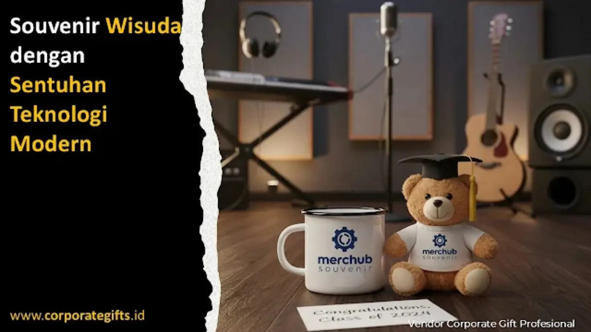

Corporate Gifts ID - Wisuda merupakan tonggak sejarah penuh makna yang menandai berakhirnya masa studi dan dimulainya langkah awal menuju dunia profesional. Di era transformasi digital seperti saat ini, perayaan kelulusan tidak lagi terbatas pada toga, buket bunga segar, atau boneka seremonial semata. Souvenir wisuda berteknologi modern kini menjadi pilihan utama institusi pendidikan dan panitia fakultas untuk menghadirkan cinderamata yang adaptif, berkelas, dan bernilai guna tinggi bagi para alumni muda.
Kombinasi antara fungsi praktis harian dan inovasi teknologi menjadikan hadiah kelulusan tidak sekadar pajangan di lemari, melainkan teman setia dalam merintis karier di tempat kerja maupun melanjutkan studi ke jenjang yang lebih tinggi. Melalui layanan pengadaan resmi Corporate Gifts ID, aneka ragam smart gadget dan souvenir kelulusan dapat dikustomisasi secara presisi dengan identitas almamater kampus Anda.
Poin Kunci Souvenir Wisuda Berteknologi Modern:
- Nilai Guna Jangka Panjang: Gadget seperti powerbank, tumbler LED, dan USB OTG dipakai secara aktif setiap hari oleh wisudawan.
- Personalisasi Eksklusif: Memungkinkan penambahan grafir laser nama wisudawan, nomor induk mahasiswa (NIM), serta lambang universitas.
- Konektivitas Emosional (QR Code): Penambahan barcode digital yang dapat dipindai untuk memutar video kenangan atau pesan dosen pembimbing.
- Pendekatan Eco-Tech: Menggabungkan komponen teknologi hemat energi dengan material ramah lingkungan seperti kayu bambu atau plastik daur ulang.
- Penguatan Reputasi Kampus: Mencerminkan institusi pendidikan tinggi yang progresif, visioner, dan siap menyongsong era industri 4.0.
Era Baru Souvenir Wisuda: Dari Simbolis ke Fungsionalitas Digital
Pergeseran minat cinderamata kelulusan didorong oleh karakter generasi lulusan baru yang dinamis dan terbiasa dengan ekosistem digital. Souvenir yang bersifat murni pajangan kerap kali berakhir di sudut ruangan tanpa fungsi praktis setelah acara selesai.
Sebaliknya, produk berteknologi seperti smart digital frame untuk memajang foto wisuda, speaker mini bluetooth berlogo almamater, hingga lampu tidur akrilik LED berukir kutipan motivasi memberikan perpaduan harmonis antara nilai sentimental dan estetika interior modern.
Cinderamata ini selaras dengan perkembangan kurasi smart digital set yang menggabungkan kepraktisan perkakas kerja hybrid dengan daya tarik visual yang elegan.
Inovasi Souvenir Interaktif yang Mendukung Rutinitas Lulusan
Berikut beberapa kelompok item souvenir berteknologi tinggi yang paling diminati oleh panitia wisuda universitas negeri maupun swasta:
1. Smart Tumbler dengan Indikator Suhu LED
Botol minum berbahan stainless steel vacuum SUS304 food-grade yang dilengkapi sensor temperatur cerdas di tutup botolnya. Wisudawan dapat memeriksa temperatur minuman panas atau dingin hanya dengan satu sentuhan jari pada layar LED, sangat ideal menemani mobilitas harian di kantor baru.

Cinderamata kelulusan interaktif dengan grafir laser presisi dan sistem pencahayaan LED dekoratif berlogo universitas.
2. Powerbank Ultra-Slim Fast Charging
Sumber daya cadangan berkapasitas 10.000 mAh bersertifikasi keamanan penuh (anti-overheat dan short-circuit). Permukaannya yang halus memungkinkan aplikasi cetak UV digital full color lambang kampus dan nama wisudawan tanpa mudah pudar.
3. Flashdisk Kartu dan USB Dual Drive OTG
Penyimpanan portabel berkapasitas 32GB hingga 64GB dengan chip original berkecepatan tinggi. Kampus bahkan dapat menyematkan data softcopy buku wisuda, kompilasi foto angkatan, atau video dokumentasi perjalanan studi di dalam drive sebelum dibagikan.
Tabel Rekomendasi Gadget Souvenir Wisuda Populer
Tabel komparasi berikut membantu panitia pengadaan menyesuaikan jenis perangkat dengan anggaran dan target penerima:
| Jenis Gadget Souvenir | Fitur Unggulan | Metode Personalisasi | Estimasi Segmen Acara |
|---|---|---|---|
| Smart Tumbler LED Suhu | Insulasi vakum 12-24 jam, display sentuh LED | Grafir laser perak / UV print logo | Seluruh wisudawan sarjana & diploma |
| Powerbank Fast Charge 10.000mAh | Dual input USB-C PD 20W, baterai polimer tipis | Full surface UV print grafis fakultas | Lulusan berprestasi & aktivis organisasi |
| Flashdisk Kartu Digital | Bentuk ringkas seukuran kartu ATM, chip original | Cetak dua sisi full color + preload data | Paket souvenir wisuda massal universitas |
| Lampu Akrilik 3D LED Kustom | Base kayu solid, cahaya warm white estetik | Laser cut & grafir nama per wisudawan | Wisudawan program pascasarjana / doktoral |
| Speaker Bluetooth Portable | Suara jernih, koneksi nirkabel jarak 10 meter | Deboss plat metal / sablon presisi | Hadiah apresiasi dosen penguji & senat |
Personalisasi dengan Sentuhan Grafir Laser dan QR Code Interaktif
Kunci keberhasilan souvenir kelulusan masa kini terletak pada tingkat personalisasi yang menyentuh ranah emosional. Teknologi digital memungkinkan setiap barang diproduksi secara massal namun tetap membawa identitas unik masing-masing individu:
- Grafir Laser Presisi: Memberikan ukiran permanen nama lengkap beserta gelar akademik wisudawan pada bodi pulpen metal, tumbler, atau plakat akrilik.
- Penyematan QR Code Dinamis: Dicetak pada bodi souvenir atau kartu pengantar, mengarahkan kamera ponsel pintar penerima langsung ke micro-site ucapan wisuda dari Rektor, dekan, atau tautan portal ikatan alumni (IKA).
- Bespoke Gift Packaging: Kotak kemasan hardbox magnetik dengan tatakan busa EVA berlekuk rapi yang menyajikan perangkat teknologi layaknya unboxing gadget premium.
Konsep Souvenir Ramah Lingkungan (Eco-Tech)
Kesadaran institusi pendidikan terhadap keberlanjutan bumi melahirkan tren eco-technology. Produk kategori ini mengintegrasikan fungsi elektronik modern dengan material alami terbarukan atau limbah daur ulang yang tersertifikasi.
Contohnya adalah pengeras suara pasif dari kayu bambu lokal tanpa konsumsi listrik, kalkulator bertenaga surya dengan casing bambu, flashdisk berbahan kayu maple daur ulang, serta tumbler stainless tahan lama yang secara langsung mengedukasi wisudawan untuk mengurangi timbulan sampah plastik sekali pakai dalam kehidupan sehari-hari.
Manfaat Strategis Souvenir Teknologi bagi Citra Universitas
Memilih cinderamata wisuda berteknologi modern mendatangkan sejumlah keuntungan nyata bagi almamater kampus:
- Membangun Citra Kampus Progresif: Membuktikan bahwa perguruan tinggi tanggap terhadap perkembangan tren dan adaptif terhadap transformasi digital generasi masa depan.
- Efektivitas Media Promosi Jangka Panjang: Logo almamater pada perangkat yang dipakai setiap hari di lingkungan kerja akan terus terpapar secara alami kepada rekan kerja dan kolega profesional alumni.
- Pemberian Rasa Bangga kepada Wisudawan: Hadiah yang bermutu tinggi dan fungsional memicu antusiasme wisudawan untuk mengunggahnya ke media sosial (social media exposure), meningkatkan branding organik universitas.
Kesimpulan
Souvenir wisuda telah bertransformasi dari sekadar pernak-pernik seremonial menjadi instrumen branding institusi yang berdaya guna tinggi. Melalui integrasi teknologi pintar, opsi personalisasi nama perorangan, dan komitmen terhadap kelestarian lingkungan, kampus Anda dapat memberikan kenangan kelulusan yang membanggakan sekaligus bermanfaat bagi karier para alumni.
Ingin merancang paket souvenir wisuda berteknologi modern untuk fakultas atau universitas Anda? Tim desainer dan konsultan Corporate Gifts ID siap membantu mulai dari pembuatan sampel 3D digital gratis hingga pengiriman tepat waktu ke seluruh Indonesia.
Pertanyaan Seputar Souvenir Wisuda Teknologi (FAQ)

Ditulis oleh: Sholikhatun Nikmah
Creative Product Designer & Bespoke PackagingDesainer visual dan spesialis kemasan kreatif di CorporateGifts.ID dengan fokus pada personalisasi visual mockup 3D, kurasi seminar kit, souvenir akademik kampus, dan bespoke gift set korporat.
Lihat Profil Lengkap & Panduan Lainnya